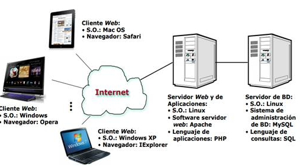
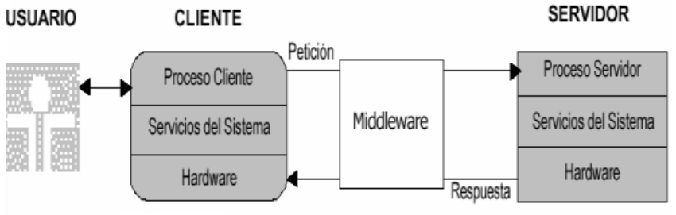
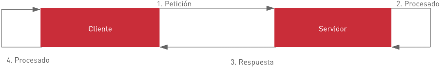

RETO 1
Una página web donde se explique la arquitectura cliente/servidor, que incluya al menos una gráfica.
ARQUITECTURA CLIENTE/SERVIDOR
1. DEFINICIÓN
Arquitectura de computación en la que se consigue un procesamiento cooperativo de la información por medio de un conjunto de procesadores, de tal forma que uno o varios clientes, distribuidos geográficamente o no, solicitan servicios de computación a uno o más servidores. (TIC, 2016).
Consiste en una arquitectura distribuida de computación, en la que las tareas de cómputo se reparten entre distintos procesadores, obteniendo los usuarios finales el resultado final de forma transparente. La totalidad de los procesadores, clientes y servidores, trabajan de forma cooperativa para realizar un determinado tratamiento de la información.

2. ELEMENTOS PRINCIPALES
2.1 CLIENTE
Ordenador o programa informático que solicita información, es el que inicia un requerimiento de servicio.
Entidad por medio de la cual un usuario solicita un servicio, realiza una petición o demanda el uso de recursos. Este elemento se encarga de la presentación de los datos y/o información al usuario en un ambiente gráfico.
2.1.1 Funciones
- Administrar la interfaz de usuario.
- Interactuar con el usuario y aceptar datos del usuario.
- Procesar la lógica de la aplicación y hacer validaciones locales.
- Generar las solicitudes para la BD.
- Transmitir las solicitudes de la BD al servidor.
- Recibir los resultados del servidor.
- Dar formato a los resultados.
- Captura y validación de los datos de entrada.
2.2 SERVIDOR
Ordenador o programa informático que dispone de información.
Entidad física que provee un servicio y devuelve resultados; ejecuta el procesamiento de datos, aplicaciones y manejo de la información o recursos. Asegura el almacenamiento, distribución, gestión de la disponibilidad y de la seguridad de los datos. Permite el acceso a los datos. El proceso del servidor es reactivo (realiza una función posterior a una petición o la ejecución de una transacción requerida por el cliente o por otro servidor).
2.2.1 Funciones
- Aceptar las solicitudes sobre la BD de los clientes.
- Procesar las solicitudes sobre la BD.
- Dar formato a los resultados y transmitirlos al cliente.
- Procesar la lógica de la aplicación y realizar validaciones a nivel de bases de datos.
- Mantener los datos generales de la BD.
- Proporcionar control de acceso concurrente.
- Llevar a cabo la recuperación.
- Optimizar el procesamiento de consultas/actualización.
2.3 MIDDLEWARE
Módulo intermedio que actúa como conductor entre sistemas (cliente/servidor) permitiendo a cualquier usuario de sistemas de información comunicarse con varias fuentes de información que se encuentran conectadas por una red.
Software construido sobre el protocolo de transporte con el fin de permitir el intercambio de peticiones y respuestas entre el cliente y el servidor de manera transparente; trata de asegurar la transparencia respecto a las redes, los SGBD y en cierta medida a los lenguajes de acceso.
Software que se encuentra en el medio del sistema cliente/servidor y se ejecuta en ambos lados, es necesario para el soporte de interacciones entre los clientes y los servidores.
2.3.1 Funciones
- Independizar las dos entidades: El cliente y el servidor no necesitan saber comunicarse entre ellos, sino cómo comunicarse con el módulo de middleware.
- Traducir la información de una aplicación y pasarla a la otra: Acepta consultas y datos recuperándolos de la aplicación cliente, los transmite y envía la respuesta de regreso. También genera los códigos de error.
- Controlar las comunicaciones: Da a la red las características adecuadas de desempeño, confiabilidad, transparencia y administración.
- Procedimiento de Conexión: Operación que permite abrir un camino desde un cliente al servidor designado por un nombre, con verificación del nombre de usuario y palabra reservada. Es necesario identificar también el nombre de la BD.
- Preparación de la petición: Operación que permite enviar una petición con parámetros no instanciados a un servidor con el fin de preparar su ejecución.
- Recuperación de los resultados: Operación que permite traer todo o parte del resultado al cliente.
- Procedimiento de Desconexión: Operación que permite cerrar el camino abierto desde el cliente al servidor.

3. CARACTERÍSTICAS
- El servidor presenta a todos sus clientes una interfaz única y bien definida.
- El cliente no necesita conocer la lógica del servidor, sólo su interfaz externa.
- El cliente no depende de la ubicación física del servidor, ni del tipo de equipo físico en el que se encuentra, ni de su sistema operativo.
- Los cambios en el servidor implican pocos o ningún cambio en el cliente.
- Recursos Compartidos: Un servidor puede atender a muchos clientes al mismo tiempo y regular sus accesos a los recursos compartidos.
- Protocolos Asimétricos: Hay una relación 1 a n entre el servidor y los clientes. Es decir, los clientes siempre inician el diálogo pidiendo servicios. Los servidores esperan pasivamente las peticiones de los clientes.
- Intercambios basados en Mensajes: Los clientes y servidores interactúan utilizando un mecanismo de paso de mensajes. El mensaje es el soporte para las peticiones de servicios y las respuestas.
- Escalabilidad: Los sistemas cliente/servidor se pueden escalar horizontal (añadir o eliminar clientes) y verticalmente (migrar a máquinas servidoras más potentes o multiservidores).
- Integridad: El código y los datos del servidor se mantienen centralizados, con lo que es menos costoso su mantenimiento y controlar la integridad de los datos compartidos.
4. COMPONENTES
- El cliente: Determinado demandante de servicios, puede ser algún ordenador o una aplicación del área informática, la cual requiera de información proveniente de la red para funcionar de manera adecuada.
- El servidor: Proveedor de servicios, los cuales a su vez pueden ser ordenadores o aplicaciones del área informática, pueden enviar información a los demás agentes que se encuentran conectados a la red.
- El servicio: Conjunto de información específica, que tiene como propósito proporcionar una respuesta a las necesidades de un cliente en específico.
- La red: Conjunto de clientes, servidores y diversos datos que se encuentran enlazados de una manera física o no física, allí se pueden encontrar diversos protocolos de transmisión de información debidamente establecida.
- El protocolo: Grupo de normas, reglas y diversos pasos debidamente establecidos, estos se pueden reflejar de manera clara y concreta acerca del flujo de información en una determinada red debidamente estructurada.
- La base de datos: Diversos bancos de información debidamente ordenada, categorizada y clasificada, las cuales forman parte de la red; son distintos sitios de almacenaje para la implementación de los servidores.
5. ESQUEMA DE FUNCIONAMIENTO
- El cliente solicita una información al servidor.
- El servidor recibe y procesa la petición del cliente.
- El servidor envía el resultado obtenido al cliente.
- El cliente recibe el resultado y lo procesa.

6. VENTAJAS Y DESVENTAJAS
VENTAJAS
- Centralización: El servidor fungirá será la fuente única de información vigente, lo que impide que los clientes conserven información desactualizada.
- Fácil de instalar (cliente): El cliente es por lo general una aplicación simple que no tiene dependencias, por lo que es muy fácil de instalar.
- Separación de responsabilidades: La arquitectura cliente-servidor permite implementar la lógica de negocio de forma separada del cliente.
- Intercomunicación dentro de una Empresa: La estructura cliente servidor además permite proporcionar a las distintas áreas que forman parte de una determinada empresa, el desarrollo de un orden de trabajo, en el que cada uno de los sectores pueda desempeñar su labor, pero ingresando al mismo servidor e información que los demás sin ningún tipo de inconveniente.
- Portabilidad: Facilita la integración entre los distintos sistemas y, además, es capaz de compartir información, permitiendo a su vez que las máquinas ya existentes, puedan ser utilizada a través de una determinada interfaz más agradable para cada uno de los usuarios. Por ejemplo, el servidor puede ser solo en Linux, mientras que el cliente podría ser multiplataforma.
DESVENTAJAS
- Actualizaciones (clientes): Una de las complicaciones es gestionar las actualizaciones en los clientes, pues puede haber muchos terminales con el cliente instalado y tenemos que asegurar que todas sean actualizadas cuando salga una nueva versión.
- Concurrencia: Una cantidad no esperada de usuarios concurrentes puede ser un problema para el servidor, quien tendrá que atender todas las peticiones de forma simultánea, aunque se puede mitigar con una estrategia de escalamiento, siempre será un problema que tendremos que tener presente.
- Todo o nada: Si el servidor se cae, todos los clientes quedarán totalmente inoperables.
- Protocolos de bajo nivel: Los protocolos más utilizados para establecer comunicación entre el cliente y el servidor suelen ser de bajo nivel, como Sockets, HTTP, RPC, etc. Lo que puede implicar un reto para los desarrolladores.
- Depuración: Es difícil analizar un error, pues los clientes están distribuidos en diferentes máquinas, incluso, equipos a los cuales no tenemos acceso, lo que hace complicado recopilar la traza del error.
7. REFERENCIAS
Blancarte Iturralde, O. J. (2020, 1 de marzo). Introducción a la Arquitectura de Software (fragmento en blog). Oscar Blancarte Blog. https://reactiveprogramming.io/blog/es/estilos-arquitectonicos/cliente-servidor
González Reyes, D.; Carvajal Nunura, B.; Manrique Neira, J.; Quijije, L. G. & Quijije, T. K. (s.f.). Telecomunicaciones: Arquitectura cliente/servidor [web]. Monografías. https://www.monografias.com/docs114/telecomunicaciones-arquitectura-cliente-servidor/telecomunicaciones-arquitectura-cliente-servidor
Jimena (2008, 4 de enero). ClienteServidor.pdf [pdf online]. http://siul02.si.ehu.es/~jimena/ABD/fuentes/
Nota Tecnológica (s.f.). Arquitectura cliente-servidor: ¿De qué trata? [blog]. NotaTecnológica. https://notatecnologica.com/programas/arquitectura-cliente-servidor/
Vaquero, D. (2019, 9 de noviembre). Arquitectura Cliente Servidor [web]. Cursos de Desarrollo. https://cursosdedesarrollo.com/2019/11/arquitectura-cliente-servidor/